Halo, saya Abiyyu Shiddiq As'ad (KaptenBiu). Front-End Developer & UI/UX Specialist lulusan S1 Sistem Informasi (IPK 3.64) dan D3 Manajemen Informatika (IPK 3.54) bersertifikasi resmi BNSP. Berpengalaman membangun aplikasi web berkinerja tinggi mulai dari interaksi 3D Three.js, antarmuka modern React, hingga arsitektur full-stack Laravel.
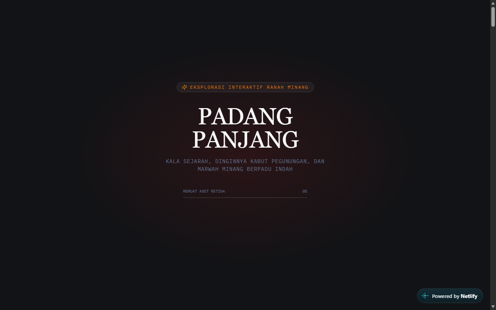
Awwwards-Tier 3D WebGL & Storytelling
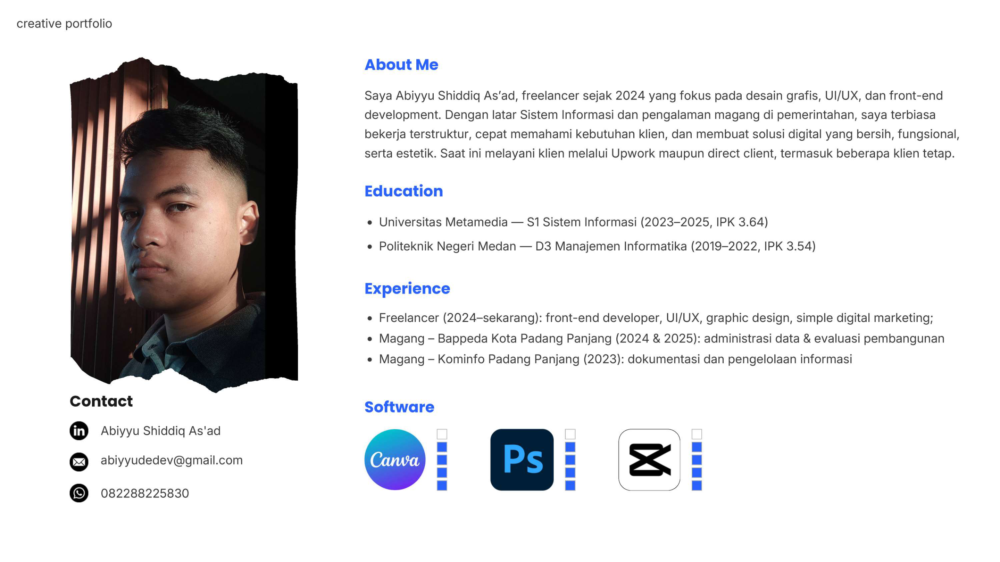
Menempuh pendidikan vokasi di Politeknik Negeri Medan (D3, IPK 3.54) dan menyelesaikannya di Universitas Metamedia (S1, IPK 3.64) memberi saya pemahaman komprehensif mengenai rekayasa perangkat lunak. Tugas akhir saya mengenai sistem pembelajaran berbasis web bahkan terpilih menjadi referensi penelitian lanjutan oleh Wakil Direktur I POLMED.
Pengalaman nyata saat magang di Bappeda Kota Padang Panjang (2025) dan Dinas Kominfo Kota Padang Panjang (2023) melatih disiplin kerja birokrasi, presisi pengolahan data, dan komunikasi publik. Didukung keahlian mengelola server Linux VPS selama 2 tahun dan sertifikasi resmi Junior Web Developer BNSP, saya siap berkontribusi pada pengembangan aplikasi skala modern.
Tech stack teruji yang siap langsung dieksekusi untuk kebutuhan rekayasa web, visual interaktif, dan sistem bisnis.
Arsitektur berbasis komponen, state management reaktif, dan performa UI mobile-first.
Pengalaman visual berstandar Awwwards, WebGL kanvas 3D, scrollytelling, dan audio web.
Pengembangan sistem backend, manajemen basis data relasional, dan transaksi data asynchronous.
Pembuatan wireframe prototipe di Figma, kontrol versi Git, hingga pengelolaan VPS Linux.
Eksplorasi proyek nyata dari 3D WebGL, sistem enterprise full-stack, SaaS dashboard, hingga solusi UMKM.
Profil kota interaktif dengan Three.js balok 3D snap-rotation, WebGL procedural mist, rel kolonial 1887, dan Saluang audio engine.
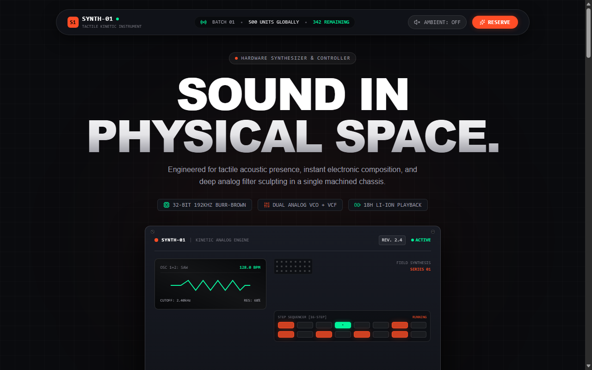
Scrollytelling Live on Netlify5 babak scrollytelling sinematik, exploded 3D chassis parallax, pinned deck, dan playable Web Audio API synth lab.
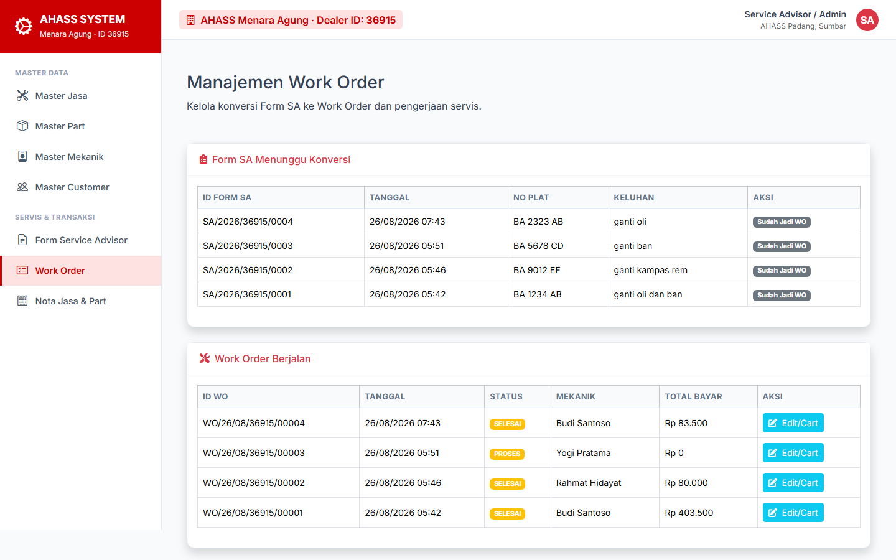
Full-Stack Enterprise Laravel 10Pendaftaran Form SA, tiket Work Order dengan penambahan suku cadang/jasa via AJAX realtime, dan auto-invoice.
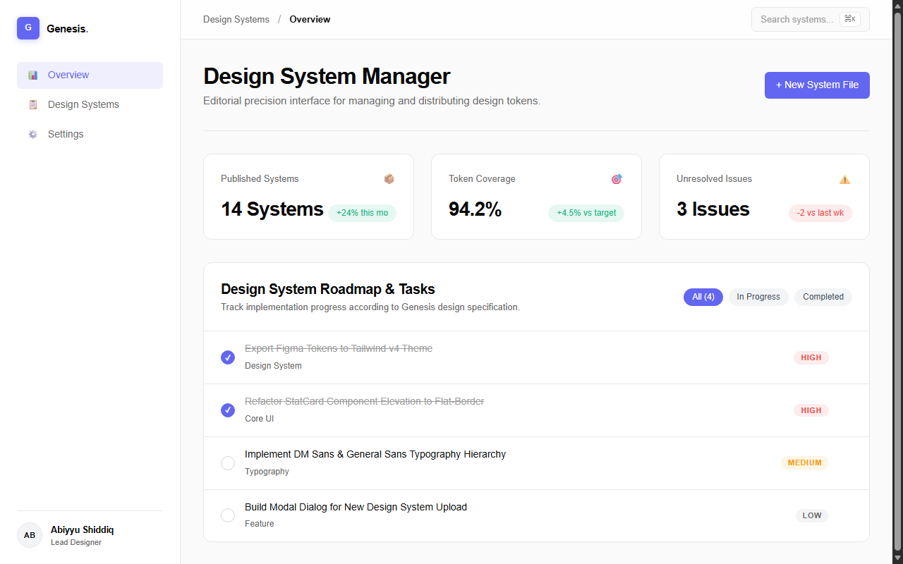
SaaS Dashboard Live on NetlifyArsitektur komponen React, persistensi localStorage, live derived metrics, dan Genesis Design System.
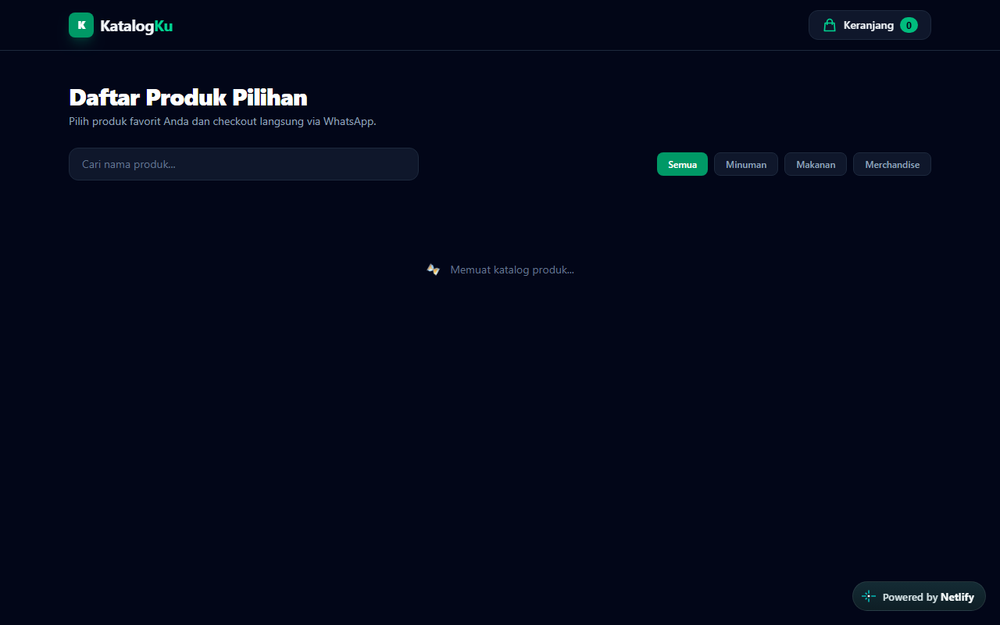
E-Commerce UMKM Live on NetlifyPencarian produk realtime, filter kategori, cart drawer dengan persistensi data, dan checkout WA otomatis.
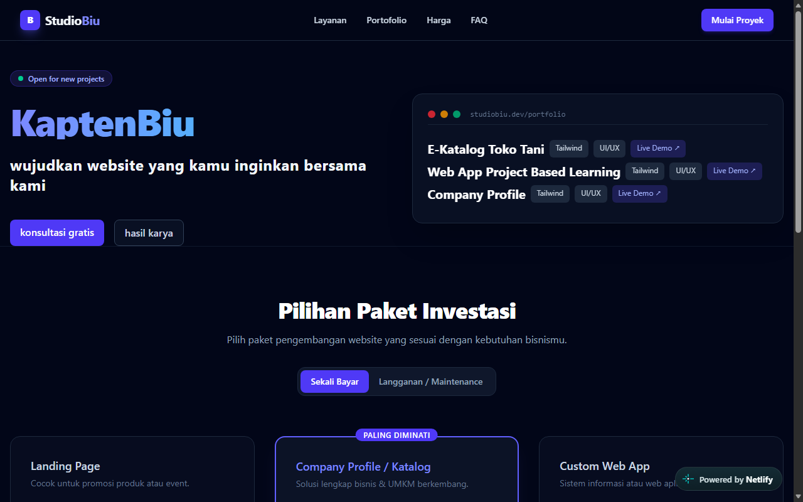
Digital Agency Live on NetlifyAntarmuka agensi digital dark modern, responsive navbar drawer, dynamic pricing toggle, dan accordion.
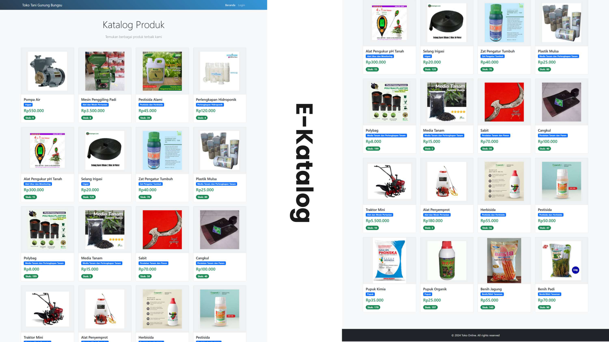
UMKM DigitalSistem katalog produk pertanian online untuk mempermudah inventaris dan pemesanan pelanggan lokal.
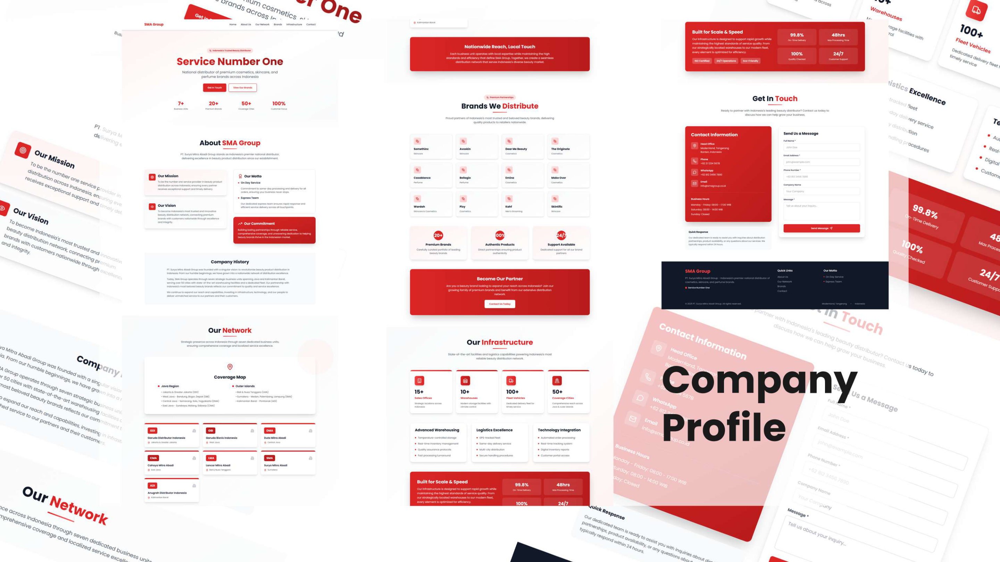
Company ProfileWebsite profil korporat dengan layout modern, visualisasi peta sebaran, dan presentasi profil rantai distribusi.
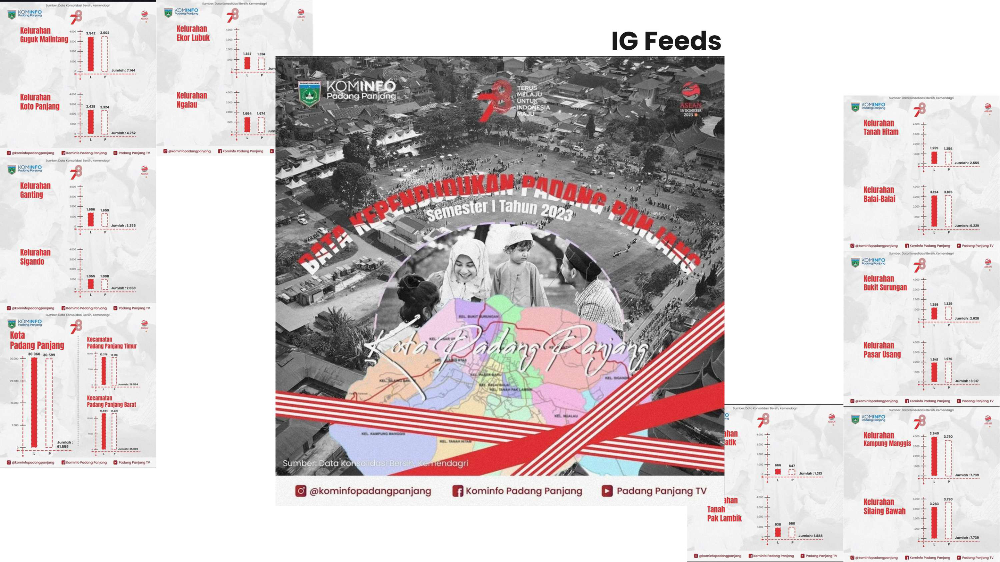
Instansi PemerintahPenyajian data demografi resmi menjadi grafis visual yang mudah dicerna oleh masyarakat umum.
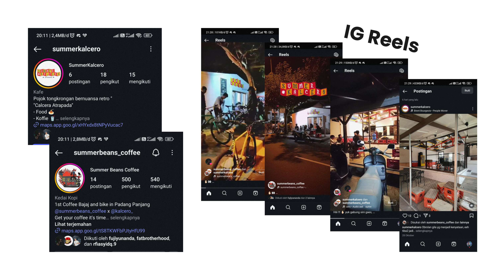
Social ContentProduksi konten visual media sosial bertema retro untuk mengangkat identitas kedai kopi lokal.
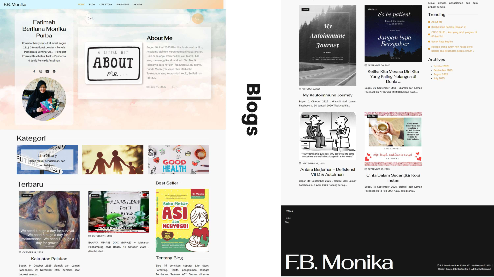
Blog PlatformPlatform blog edukasi kesehatan & parenting dengan tata letak konten bersih dan pembacaan ramah mata.
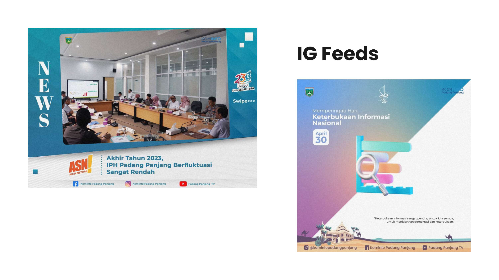
Media PublikasiFormat feed berita aktual untuk mendukung transparansi kinerja ASN dan program prioritas pemerintah kota.
Sedang membuka kesempatan kerja remote / on-site untuk posisi Front-End Developer, Web Designer, atau kerja sama proyek digital bisnis Anda.
Unduh dokumen resmi yang siap diteruskan ke recruiter atau pimpinan tim Anda: